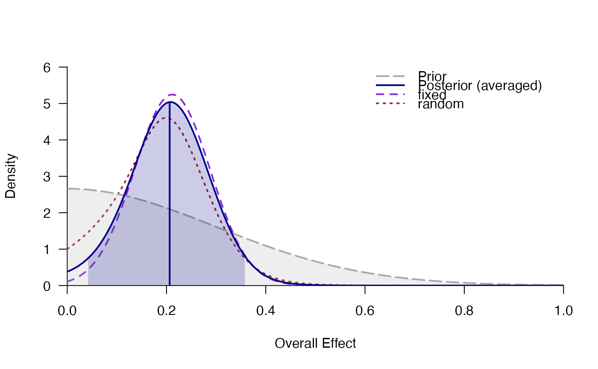

Fits random- and fixed-effects meta-analyses and performs Bayesian model averaging for H1 (d != 0) vs. H0 (d = 0).
meta_bma( y, SE, labels, data, d = prior("cauchy", c(location = 0, scale = 0.707)), tau = prior("invgamma", c(shape = 1, scale = 0.15)), rscale_contin = 0.5, rscale_discrete = 0.707, centering = TRUE, prior = c(1, 1, 1, 1), logml = "integrate", summarize = "stan", ci = 0.95, rel.tol = .Machine$double.eps^0.3, logml_iter = 5000, silent_stan = TRUE, ... )
| y | effect size per study. Can be provided as (1) a numeric vector, (2)
the quoted or unquoted name of the variable in |
|---|---|
| SE | standard error of effect size for each study. Can be a numeric
vector or the quoted or unquoted name of the variable in |
| labels | optional: character values with study labels. Can be a
character vector or the quoted or unquoted name of the variable in
|
| data | data frame containing the variables for effect size |
| d |
|
| tau |
|
| rscale_contin | scale parameter of the JZS prior for the continuous covariates. |
| rscale_discrete | scale parameter of the JZS prior for discrete moderators. |
| centering | whether continuous moderators are centered. |
| prior | prior probabilities over models (possibly unnormalized) in the
order |
| logml | how to estimate the log-marginal likelihood: either by numerical
integration ( |
| summarize | how to estimate parameter summaries (mean, median, SD,
etc.): Either by numerical integration ( |
| ci | probability for the credibility/highest-density intervals. |
| rel.tol | relative tolerance used for numerical integration using
|
| logml_iter | number of iterations (per chain) from the posterior
distribution of |
| silent_stan | whether to suppress the Stan progress bar. |
| ... | further arguments passed to |
Bayesian model averaging for four meta-analysis models: Fixed- vs. random-effects and H0 (\(d=0\)) vs. H1 (e.g., \(d>0\)). For a primer on Bayesian model-averaged meta-analysis, see Gronau, Heck, Berkhout, Haaf, and Wagenmakers (2020).
By default, the log-marginal likelihood is computed by numerical integration
(logml="integrate"). This is relatively fast and gives precise,
reproducible results. However, for extreme priors or data (e.g., very small
standard errors), numerical integration is not robust and might provide
incorrect results. As an alternative, the log-marginal likelihood can be
estimated using MCMC/Stan samples and bridge sampling (logml="stan").
To obtain posterior summary statistics for the average effect size d
and the heterogeneity parameter tau, one can also choose between
numerical integration (summarize="integrate") or MCMC sampling in Stan
(summarize="stan"). If any moderators are included in a model, both
the marginal likelihood and posterior summary statistics can only be computed
using Stan.
Gronau, Q. F., Erp, S. V., Heck, D. W., Cesario, J., Jonas, K. J., & Wagenmakers, E.-J. (2017). A Bayesian model-averaged meta-analysis of the power pose effect with informed and default priors: the case of felt power. Comprehensive Results in Social Psychology, 2(1), 123-138. doi: 10.1080/23743603.2017.1326760
Gronau, Q. F., Heck, D. W., Berkhout, S. W., Haaf, J. M., & Wagenmakers, E.-J. (2020). A primer on Bayesian model-averaged meta-analysis. doi: 10.31234/osf.io/97qup
# \donttest{ ### Bayesian Model-Averaged Meta-Analysis (H1: d>0) data(towels) set.seed(123) mb <- meta_bma(logOR, SE, study, towels, d = prior("norm", c(mean = 0, sd = .3), lower = 0), tau = prior("invgamma", c(shape = 1, scale = 0.15)) ) mb#> ### Meta-Analysis with Bayesian Model Averaging ### #> Fixed H0: d = 0 #> Fixed H1: d ~ 'norm' (mean=0, sd=0.3) truncated to the interval [0,Inf]. #> Random H0: d = 0, #> tau ~ 'invgamma' (shape=1, scale=0.15) with support on the interval [0,Inf]. #> Random H1: d ~ 'norm' (mean=0, sd=0.3) truncated to the interval [0,Inf]. #> tau ~ 'invgamma' (shape=1, scale=0.15) with support on the interval [0,Inf]. #> #> # Bayes factors: #> (denominator) #> (numerator) fixed_H0 fixed_H1 random_H0 random_H1 #> fixed_H0 1.00 0.0419 0.372 0.0975 #> fixed_H1 23.87 1.0000 8.872 2.3259 #> random_H0 2.69 0.1127 1.000 0.2622 #> random_H1 10.26 0.4299 3.815 1.0000 #> #> # Bayesian Model Averaging #> Comparison: (fixed_H1 & random_H1) vs. (fixed_H0 & random_H0) #> Inclusion Bayes factor: 9.249 #> Inclusion posterior probability: 0.902 #> #> # Model posterior probabilities: #> prior posterior logml #> fixed_H0 0.25 0.0264 -5.58 #> fixed_H1 0.25 0.6311 -2.40 #> random_H0 0.25 0.0711 -4.59 #> random_H1 0.25 0.2713 -3.25 #> #> # Posterior summary statistics of average effect size: #> mean sd 2.5% 50% 97.5% hpd95_lower hpd95_upper n_eff Rhat #> averaged 0.207 0.080 0.049 0.207 0.364 0.045 0.360 NA NA #> fixed 0.215 0.075 0.070 0.215 0.364 0.073 0.365 2083.6 1.001 #> random 0.194 0.088 0.026 0.192 0.370 0.017 0.356 4692.6 1.001# }